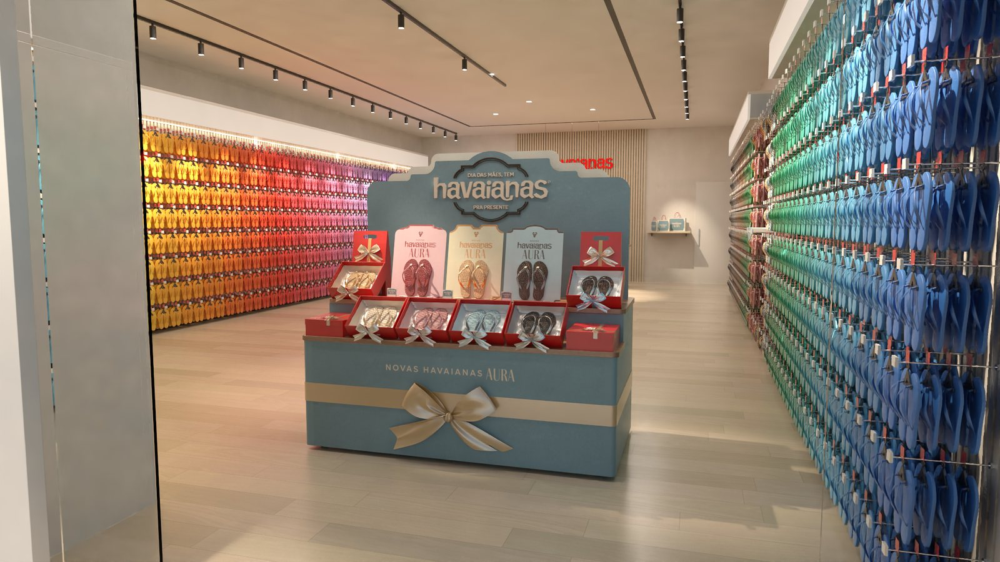
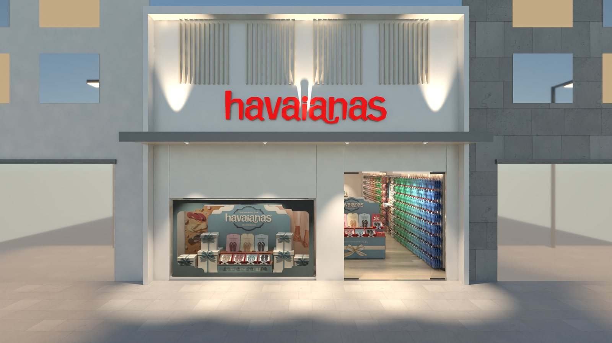
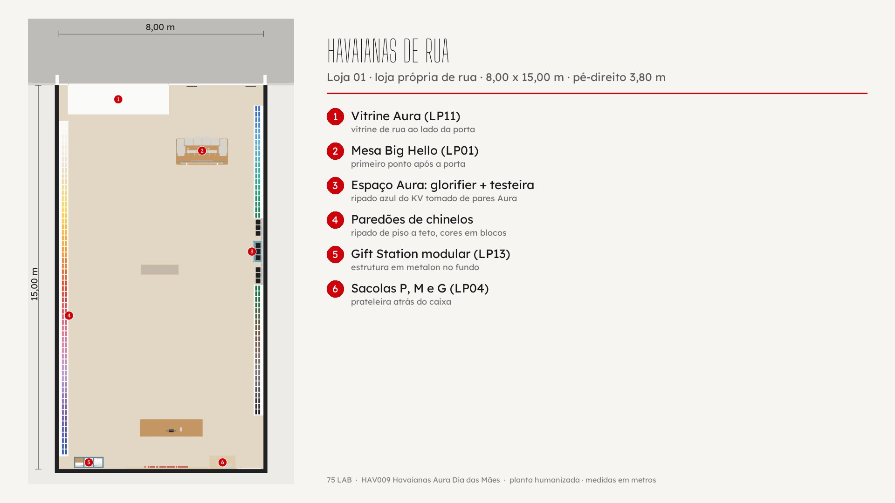
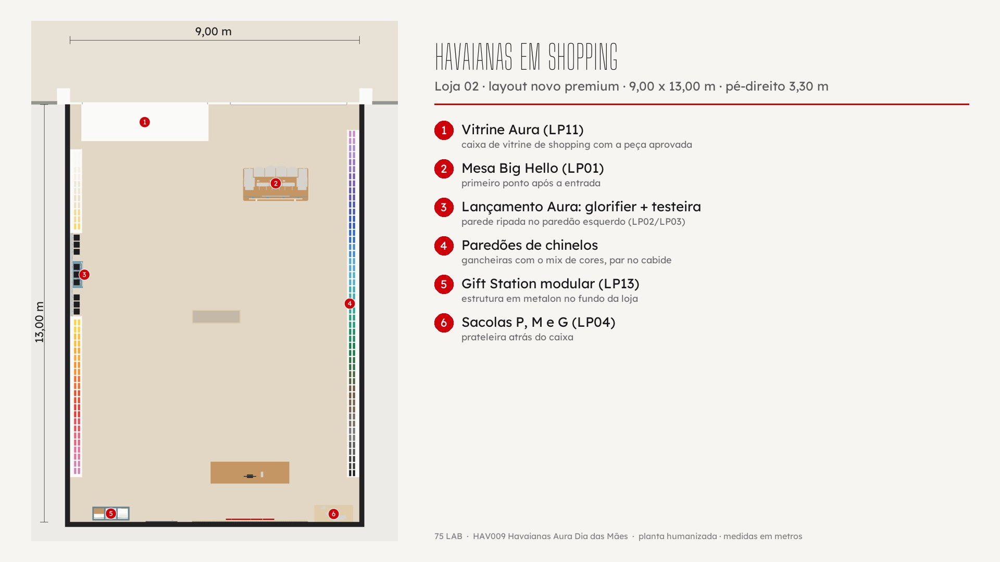
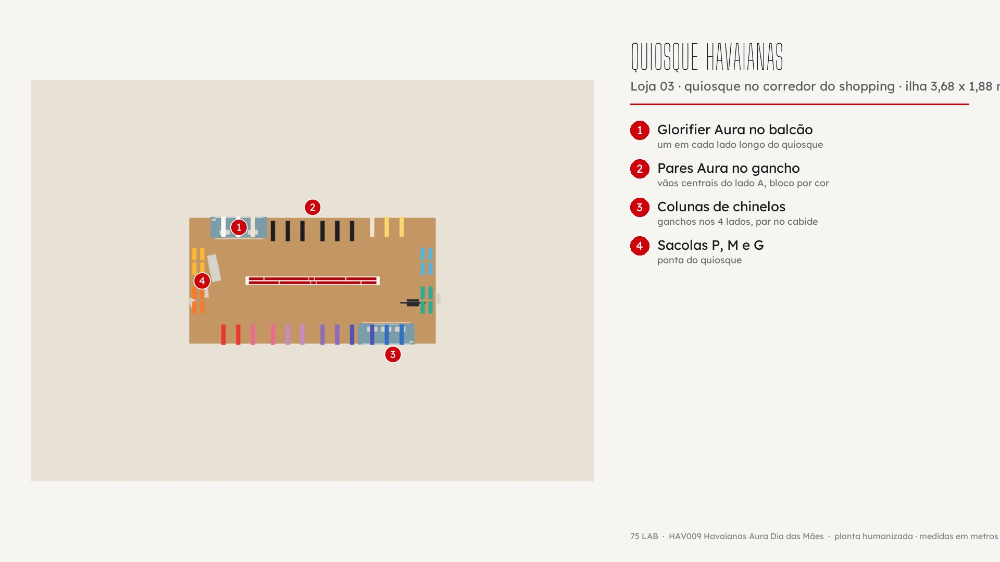
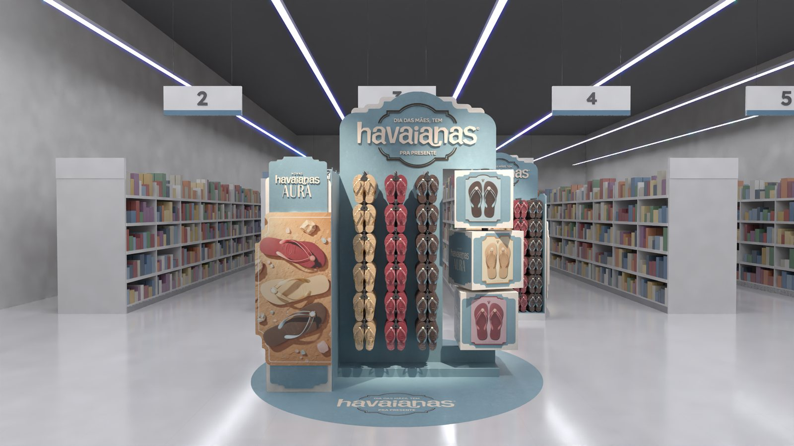
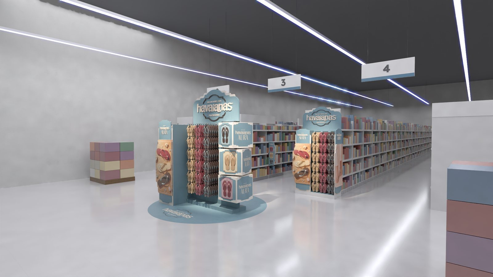
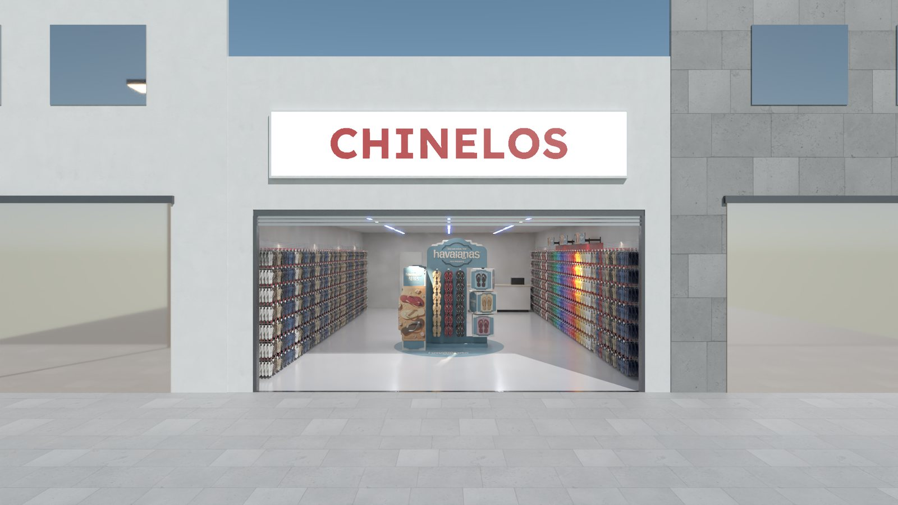
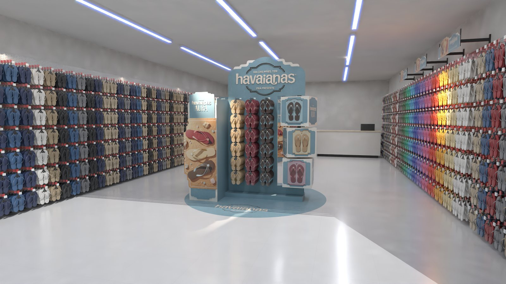

75 LAB · HAV009 · Havaianas Aura Dia das Mães
As peças Aura na loja
Cinco formatos de ponto de venda modelados em escala real, com as peças aprovadas aplicadas: da loja de rua ao corredor do hipermercado.
Prévia · 26/11/2026

Loja 01 · loja própria de rua · 8,00 x 15,00 m
Havaianas de rua
Sobrado branco ao entardecer com a letra caixa grande, vitrine Aura e porta aberta. Dentro, a Mesa Big Hello recebe na porta e o espaço Aura em ripado azul vira o ponto de lançamento.


Peças Aura aplicadas
- 1Vitrine Auravitrine de rua ao lado da porta
- 2Mesa Big Helloprimeiro ponto após a porta
- 3Espaço Aura: glorifier + testeiraripado azul do KV tomado de pares Aura
- 4Paredões de chinelosripado de piso a teto, cores em blocos
- 5Gift Station modularestrutura em metalon no fundo da loja
- 6Sacolas P, M e Gprateleira atrás do caixa

Loja 02 · layout novo premium · 9,00 x 13,00 m
Havaianas em shopping
Portal branco com letra caixa vermelha, vitrine Aura para o corredor e entrada aberta. A Mesa Big Hello abre a loja, os paredões ripados vêm cheios de cor e o espaço Aura azul marca o lançamento.


Peças Aura aplicadas
- 1Vitrine Auracaixa de vitrine de shopping
- 2Mesa Big Helloprimeiro ponto após a entrada
- 3Espaço Aura: glorifier + testeiraripado azul no paredão esquerdo
- 4Paredões de chinelosganchos em grade, par no cabide
- 5Gift Station modularestrutura em metalon no fundo da loja
- 6Sacolas P, M e Gprateleira atrás do caixa

Loja 03 · quiosque no corredor do shopping · ilha 3,68 x 1,88 m
Quiosque Havaianas
Ilha baixa no corredor do shopping, como os quiosques Havaianas reais: colunas de chinelos nos quatro lados, tampo de madeira com as letras vermelhas em pé e o glorifier Aura em cima do balcão, um de cada lado. Os vãos centrais do lado A trazem os pares Aura.


Peças Aura aplicadas
- 1Glorifier Aura no balcãoum em cada lado longo
- 2Pares Aura no ganchovãos centrais do lado A
- 3Colunas de chinelosganchos nos quatro lados, par no cabide
- 4Sacolas P, M e Gna ponta do quiosque

Loja 04 · hipermercado · corredor Havaianas
Varejo alimentar
No corredor principal, a ilha Aura chama o cliente para o corredor Havaianas, que abre com a ponta de gôndola Aura. Na gôndola, as peças leves aplicadas: stopper, wobbler, clip strip, testeira, moldura e tag.


Peças Aura aplicadas
- 1Ilha Auracorredor principal
- 2Ponta de gôndola Auracabeça do corredor Havaianas
- 3Stoppergôndola do corredor
- 4Wobbler e clip stripmeio do corredor
- 5Testeira, moldura e tagseção Havaianas com pares Aura

Loja 05 · B2B especializado · 7,00 x 12,00 m · sem vitrine
Chinelaria
Loja de rua de alto volume, porta de enrolar aberta e paredes lotadas do piso ao teto. No canal B2B entram só a ilha, a ponta de gôndola e as peças leves: a ilha Aura é o hot point da porta e a ponta abre a gôndola central.


Peças Aura aplicadas
- 1Ilha Aurahot point logo na entrada
- 2Seção Havaianas + testeiras levesperfurado vermelho, degradê de cores
- 3Ponta de gôndola Auracabeça da gôndola central
- 4Clip stripfim da gôndola central
- 5Paredes multimarcasperfurado branco lotado de pares